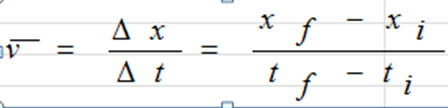
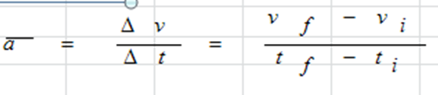

WHAT IS IT?
Physics is a natural science that involves the study of matter and its motion through spacetime, along with related concepts such as energy and force. More broadly, it is the general analysis of nature, conducted in order to understand how the universe behaves. Physics is one of the oldest academic disciplines, perhaps the oldest through its inclusion of astronomy. Over the last two millennia, physics was a part of natural philosophy along with chemistry, certain branches of mathematics, and biology, but during the Scientific Revolution in the 16th century, the natural sciences emerged as unique research programs in their own right. Certain research areas are interdisciplinary, such as biophysics and quantum chemistry, which means that the boundaries of physics are not rigidly defined. In the nineteenth and twentieth centuries physicalism emerged as a major unifying feature of the philosophy of science as physics provided fundamental explanations for observed natural phenomenon. New ideas in physics often explain the fundamental mechanisms of other sciences, while opening new avenues of research in areas such as mathematics and philosophy.
Physics also makes significant contributions through advances in new technologies that arise from theoretical breakthroughs. For example, advances in the understanding of electromagnetism or nuclear physics led directly to the development of new products which have dramatically transformed modern-day society, such as television, computers, domestic appliances, and nuclear weapons; advances in thermodynamics led to the development of industrialization; and, advances in mechanics inspired the development of calculus.
Energy and Forces
Contact Forces
In physics, a contact force is a force that acts at the point of contact between two objects,[1] in contrast to body forces. Contact forces are described by Newton's laws of motion, as with all other forces in dynamics.
Friction
Friction is the force resisting the relative motion of solid surfaces, fluid layers, and/or material elements sliding against each other.
Non-contact
A non-contact force is a force applied to an object by another body that is not in direct contact with it. The most common example of a non-contact force is gravity. A non-contact force is different from a contact force, which is a force applied to a body by another body that is in contact with it. However it is to be noted that the origin of all contact forces (such as, for example, friction) can be traced to non-contact forces.Gravity
Gravity, a non-contact force between an two objects, and related to the concept of mass. The force exerted on each body by the other through weight is proportional to the mass of the first body times the mass of the second body divided by the square of the distance between them. The direction of the force is from the body acted on towards the body applying the force. A human body's weight is a non-contact force exerted by the Earth on their mass.
Electromagnetism
Electromagnetism is the force that causes the interaction between electrically charged particles; the areas in which this happens are called electromagnetic fields. Examples of this force include: electricity, magnetism, radio waves, microwaves, infrared, visible light, X-rays and gamma rays.
Useful Formula
| Formula | Legend (symbols) |
|---|---|
|  | T = period [s] |
| v = velocity [ms-1] | |
|  | G = gravitational constant = [Nm2kg--2] |
| h = height [m] | |
| P = w/t | K = kinetic energy [J] |
| Fnet = ma | m = mass [kg] |
| K = ½ m v2 | M = mass [kg] |
| Gravitational Potential Energy = mgh | P = Power |
| Fg = G (m1 x m2)/r2 | PE = potential energy = [J] |
| F = p/t | R = Normal force (or Reaction force) [N] |
| p = m v | s = distance or arc length [m] |
| g = acceleration of gravity = 9.8 ms-2 | t = time [s] |
| W = work [J] |